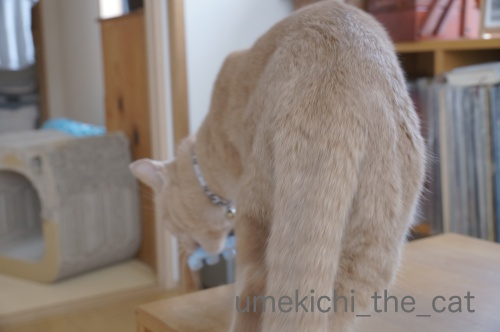
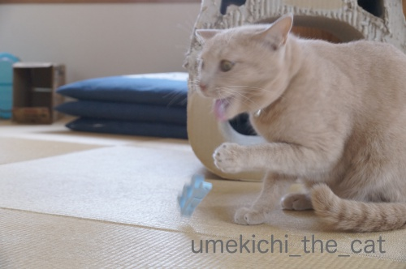
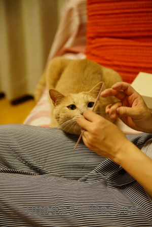
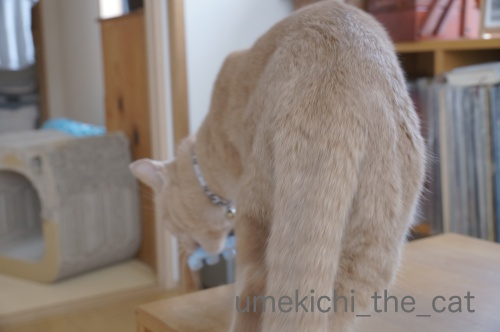
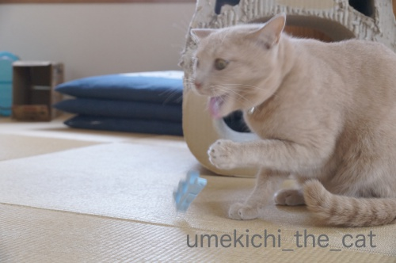
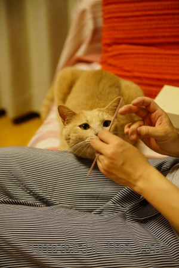

梅吉は爪のお手入れがお好き [梅吉]
かつてはネイルサロンでジェルネイルなどしていた時期もありましたが
私が不器用なのか家事がしにくい（ラップ類が張り付く、細かいものが摘めない等）事と
何より梅吉に怪我をさせては大変なので今は自爪、ケアは自分でしております。
（ネイルしていても動物には全く危険はないよ！という方ももちろんいらっしゃるかと＾＾
これはあくまで私個人の判断です。梅吉、やんちゃだしね・・・）

色々お道具を使ってケアしますが（これはなんじゃ？という男性は身近な女性に聞いてくださいね）
このケア道具、梅吉の大好物でもあります。
撮影していたら眠ってたのに飛び起きてやって来ました！

ケア用品の中でも一番執着しているのはこの青いスポンジ状のもの。
ペディキュアするときに足の指を離すために使うのですがこれが好きで好きで・・・
お気付きの方もいらっしゃるかと思いますがもう一山ないと全部の指が離れません。
足りない山はそう！梅吉に噛みちぎられましたw

のんきに写真を撮ってたら強奪されましたよ。
噛み心地が好きなんでしょうか・・・・・

強奪してがぶ！
念願叶ってウハウハかもしれませんが同時にちょっと困ってます。

歯に刺さって取れない模様( ´艸｀)

必死！！！

無事取れました。
おイタするからそんなことになるんですよwww
それにしてもすごい妖猫顔です (⌒_⌒;

私がケアしているときは張り付いてきます。

![[猫]](https://blog.ss-blog.jp/_images_e/101.gif) あが〜っ！
あが〜っ！
尖ったものが多いし危ないので梅吉に張り付かれるとケアが全然進みません（涙）
梅吉は幼い頃から人間の「爪」関係が大好きでした。
切った爪を食べようとした時期もあったしw
みなさんのお家のにゃんこは変なものに執着することはないでしょうか。
 ↑ガブッと一押し↑
↑ガブッと一押し↑
秋分の日、奈良御所市の葛城古道に行って来ました。
詳しく見たい方はここをクリック！
ここ葛城は神話に登場する高天原の地ではないかと言う説もあり
古くは鴨氏や葛城氏という有力豪族が治めた地域でした。
高天原だったと言われる場所も残っているし
全国のカモ系神社の総本社とされる高鴨神社もここにあります。
日本の歴史上重要な地域の一つ？
が、今回の目的は歴史に触れることではなく彼岸花を見にいくことでした＾＾
近鉄御所駅を起点にしてあぜ道をてくてく行きます。
（ゆるゆるした上り坂が続くので結構足にきます。）
見えて来ました！ヒガンバナ！！
このくらいの群生できゃあきゃあ喜んでいたのですが甘かった・・・
葛城山の裾野に近づくにつれて
すごい！
大群生です。
稲穂も良い具合に頭を垂れています。
真っ赤です(≧▽≦)
眼下に見えるのは奈良盆地。
ここからは大和三山も見渡せます。
後ろに山、盆地も見渡せる・・・軍事的にも有用な土地だったのかな。
ネットで色々下調べはして出かけましたがここまで大群生が見られるとは！
期待以上でしたよー。
このわんこ、カメラを持った方々からモデルをお願いされていました。
便乗してパチリ。
こういう日本的風景には和犬が似合いますよね＾＾
梅雨みたいな天気が続いていた関西ですがこの日は気持ち良く晴れ上がりました。
とっても暑くて汗だくになって歩き回りましたが気持ちが良かったです＾＾
（次回に続きます）
私が不器用なのか家事がしにくい（ラップ類が張り付く、細かいものが摘めない等）事と
何より梅吉に怪我をさせては大変なので今は自爪、ケアは自分でしております。
（ネイルしていても動物には全く危険はないよ！という方ももちろんいらっしゃるかと＾＾
これはあくまで私個人の判断です。梅吉、やんちゃだしね・・・）
色々お道具を使ってケアしますが（これはなんじゃ？という男性は身近な女性に聞いてくださいね）
このケア道具、梅吉の大好物でもあります。
撮影していたら眠ってたのに飛び起きてやって来ました！
ケア用品の中でも一番執着しているのはこの青いスポンジ状のもの。
ペディキュアするときに足の指を離すために使うのですがこれが好きで好きで・・・
お気付きの方もいらっしゃるかと思いますがもう一山ないと全部の指が離れません。
足りない山はそう！梅吉に噛みちぎられましたw

のんきに写真を撮ってたら強奪されましたよ。
噛み心地が好きなんでしょうか・・・・・
強奪してがぶ！
念願叶ってウハウハかもしれませんが同時にちょっと困ってます。
歯に刺さって取れない模様( ´艸｀)
必死！！！

無事取れました。
おイタするからそんなことになるんですよwww
それにしてもすごい妖猫顔です (⌒_⌒;

私がケアしているときは張り付いてきます。
尖ったものが多いし危ないので梅吉に張り付かれるとケアが全然進みません（涙）
梅吉は幼い頃から人間の「爪」関係が大好きでした。
切った爪を食べようとした時期もあったしw
みなさんのお家のにゃんこは変なものに執着することはないでしょうか。
秋分の日、奈良御所市の葛城古道に行って来ました。
詳しく見たい方はここをクリック！
ここ葛城は神話に登場する高天原の地ではないかと言う説もあり
古くは鴨氏や葛城氏という有力豪族が治めた地域でした。
高天原だったと言われる場所も残っているし
全国のカモ系神社の総本社とされる高鴨神社もここにあります。
日本の歴史上重要な地域の一つ？
が、今回の目的は歴史に触れることではなく彼岸花を見にいくことでした＾＾
近鉄御所駅を起点にしてあぜ道をてくてく行きます。
（ゆるゆるした上り坂が続くので結構足にきます。）
見えて来ました！ヒガンバナ！！
このくらいの群生できゃあきゃあ喜んでいたのですが甘かった・・・
葛城山の裾野に近づくにつれて
すごい！
大群生です。
稲穂も良い具合に頭を垂れています。
真っ赤です(≧▽≦)
眼下に見えるのは奈良盆地。
ここからは大和三山も見渡せます。
後ろに山、盆地も見渡せる・・・軍事的にも有用な土地だったのかな。
ネットで色々下調べはして出かけましたがここまで大群生が見られるとは！
期待以上でしたよー。
このわんこ、カメラを持った方々からモデルをお願いされていました。
便乗してパチリ。
こういう日本的風景には和犬が似合いますよね＾＾
梅雨みたいな天気が続いていた関西ですがこの日は気持ち良く晴れ上がりました。
とっても暑くて汗だくになって歩き回りましたが気持ちが良かったです＾＾
（次回に続きます）
2018-09-25 00:00
nice!(66)
コメント(28)

カフェオレ色の梅吉

梅吉 2023年8月10日 永眠


梅吉と出会った譲渡会

犬猫の理由なき殺処分ゼロ
妄想広告
UMEKICHI 光

爆発的に早い！
時々攻撃的！
Thanks to Mr.Boss365
爆発的に早い！
時々攻撃的！
Thanks to Mr.Boss365

ｗｗｗｗ
セパレーターをセパレートしてる(笑)
くれはは、、あんまり癖なかったかなぁ…
ちっさい頃はメッシュネット見るとがしがしクライミングしてましたがｗ
いつからか自重に気づいてやめちゃいました。
ふつーに袋と紐と箱に反応してましたねぇ…
巻き爪なんで男子でも爪手入れしてますが、、、
やはり雑になりますｗｗ
爪ってデリケートですからねぇ。。。
ちゃんと気を使えている人って凄いなって思います。
by 猫毬 (2018-09-25 00:50)
梅吉さんのおイタに笑わせてもらいました。歯に刺さった後のホエッ! ぽろっ! のとこがサイコー。私だったらバシッと取り返してるのに、ちぃさんはやっぱり優しいわぁ。
彼岸花の群生もすごいですねー。
by zombiekong (2018-09-25 02:23)
見た感じウレタン製なのかな？
歯が刺さって面白いから止められないとか？（爆）
今居るニャンコだと切った爪の欠片に興味を示す子は居ないですね。
昔、実家で飼ってたミニピンはすかさず食べに来てました＾＾；
by ぽちの輔 (2018-09-25 06:44)
梅吉さん、興味津々ですね。
by ニコニコファイト (2018-09-25 07:04)
こんなに色々お手入れ道具があるとはー(@_@)！
彼岸花、すごい状態！真っ赤やんー！
by よーちゃん (2018-09-25 08:23)
おはようございます。
歯に刺さって取れない？必死顔の梅吉君！！最高です（爆）
目が点になってます。舌出しながら「危ない・危ない」と呟いでいるみたいです！！
冷静に撮影している？ちぃさんは「無事撮れました」ですね！！
寄り添う梅吉君！！可愛いですね！！
ちぃさんがケアしている時は、ご主人も「張り付いて」撮影。お疲れです！！
小生猫？以前は無かったですが、最近スニーカーに執着？
スネスネするので帰宅後は直ぐに下駄箱に収納です！？(=^･ｪ･^=)
by Boss365 (2018-09-25 10:09)
梅吉さん、爪のお手入れをする道具で
歯のお手入れとか^^;
先代猫はかみさんのビーチサンダルが大好きで
いつもガブガブして歯形つけまくりでした^^;
材質はちょうどこのブルーのに似てました＾＾
ガブってしたときの歯の沈み具合が良かったのかもｗ
ただサンダルはディズニーワールドで買ってきて
日本では売ってなかったのでどんなにボロボロになっても
捨てさせてもらえませんでした^^;
by ニッキー (2018-09-25 11:44)
爪が弱いのかスグに欠けて常に２～3本メンテナンス中。
逆に見苦しく早々に諦めました！
こてつも暴れん坊だから丁度良かったです^^
梅吉さん、楽しそう～いいお顔です(#^^#)
歯や爪が引っかかって抜けなくなると慌てるくせに、ウチのも何度も同じことを繰り返します^^;
ウチのが執着するのは糊かな？？
セロテープ、封筒、コロコロ、切手、何でもベロンベロン舐めたがります(≧▽≦)
彼岸花、絶景～♪ 奈良にこんな怖いくらいステキな場所があるとは知りませんでした！
by ゆきち (2018-09-25 12:00)
王子・・・何でも興味があるのねー。ママの側で興味シンシンな様子が可愛い～♪
by Ginger (2018-09-25 12:20)
ちょうど噛み心地が良さそうですよね〜^ ^；。
以前いたコが、足を触られるのがいやなコだったから、
爪をしばらくほっておいたら、足の裏に干渉するようになったらしく、
うずくまったりするようになったので、病院で切ってもらったこと
あります。ほっとくと、分厚くなっちゃうんで、普通の爪切りじゃ、
切れないんですよね。梅吉さん、バッファーまでやってもらってる？
by nachic (2018-09-25 13:14)
1枚目の写真。
数あるネイルグッズに、フレームインする梅吉さん。
あれれ？梅吉さんもネイルアイテムなの？、と思いきや、
ちょっかい出し、という重要ポジションだったのですね！(^▽^;)
我が家の場合、ソフィーが毎朝のお化粧タイムでガン見してきます。
そして、綿棒をチョイチョイ♪
それにしても、ネイル道具の数々は、かなり本格的ではないですか？
めっちゃ、楽しそうですー(^-^)
by morichan (2018-09-25 16:38)
私もネイル。全くしなくなったよ。
ケアさえ・・・いつも短く爪切りでチョキチョキするくらい。
ちぃさんのお道具見ていたら、自分の女子力の低さを思い知らされたよ～。
やりたい放題の梅吉くん、面白過ぎるし。
なかなか進まないのがわかります。
家も顔や手にローションやクリームを塗るとタラが大騒ぎ！ペロペロされて困ります(^-^;
by emi (2018-09-25 17:36)
梅吉さん、やはり期待を裏切りませんね！
歯に刺さっちゃうなんてお茶目すぎます。うちの猫は煮干しを飲み水に浸して出汁？を飲むのが好きでした。
猫はひょんな事（偶然）から興味を示すんですね(^^)
by kou (2018-09-25 18:49)
梅吉さんネイルケア製品に興味津々ですね！
でも切った爪はとんがっているので飲むと危険ですね(^^)
by ma2ma2 (2018-09-25 19:37)
猫毬さん＞
ある時ハッと気づいたのでしょうね自分の体が「成長」してる事にw
有難いことに梅吉もレースのカーテン登りをしなくなりましたよ。
今されるとカーテンビリビリになります・・・（涙）
ネイルケア、今では梅吉と遊ぶためにやっているかもー＾＾
zombiekongさん＞
バシッと取り返したいのは山々なんですがあんまり楽しそうで(⌒_⌒;
もうボロボロのベトベトなので少し遊ばせてから
回収する様にしていますw
使用するのは諦めましたよ・・・・もうおもちゃですw
彼岸花すごいでしょう！私もこんなにすごいと思いませんでした。
ぽちの輔さん＞
ウレタン製のベッドマットをかじるのも大好きだったので（最近やらない）
おなじくウレタンっぽい素材のコレもいい感じなんでしょうね〜。
噛むとぷすぷすといい音してますよ＾＾
もうおもちゃで良いんですけど渡しちゃうと食べそうで怖い・・・・
動物、爪食べる子は時々いるんですねw
タンパク質摂取！？
ニコニコファイトさん＞
興味持たれすぎて困っちゃいますwww
よーちゃん＞
お手入れ用品これの他にもまだあるんですよ＾＾
爪を磨くボリッシャーとか・・・
彼岸花、ちょうど見頃でした！
あと１週間もしたらちょっとさみしくなっているかもです。
Boss365さん＞
カメラを構えながら「おー！期待以上！！」と喜んじゃいましたよ＾＾
さすが梅吉、大阪の子ですwww
寄り添う梅吉はとっても可愛いのですが
寄り添われる方は怪我されない様に気遣ってケアどころじゃ無くなります。
下僕も大変です！
すももちゃんはスニーカーに執着？
梅吉も時々おっとのビジネスシューズと戦ってます。
下駄箱にしまう前に一干ししたいのにー！！
ニッキーさん＞
あらら、ボロボロのビーチサンダル・・・
思い出の品が残念なことに？
ゴッドマザー様の移り香があったのが余計に人気だったのかしらw
梅吉のガブガブしているブルーのはご推察通り
ビーサンっぽい素材です。
あの素材の噛みごごちはにゃんこを魅了するのでしょうか＾＾
その後、新しいお気に入りのビーサンが見つかっていますように！！
ゆきちさん＞
そうそう！ネイルは欠けたり割れたり結構メンテナンスも大変ですよね。
その度に時間もお金もかかるし・・・
私はオフした時に自爪がものすごく柔らかく脆く感じてしまって
このままだと一生ネイルし続けなきゃいけないのか、と
ちょっと怖くなったのもやめた理由の一つです。
こてつくんは糊に執着！？
ベロンベロンされたら体にも良くなさそうだしちょっと困りますねw
葛城古道の彼岸花、難波っこのゆきちさんもご存知なかったとは！！
ツウみたいでちょっとうれしい＾＾
Gingerさん＞
そうなんです！もう何にでも臆せず食いついてきますwww
その好奇心いっぱいのお顔がまた可愛いのですけれど＾＾
nachicさん＞
あらら、爪を切らないと大事になっちゃうんですね。
梅吉は抱っこした状態での爪切りは嫌がるのですが
寝そべった姿勢ならどこを触っても嫌がらないので
爪切りはとってもラクです＾＾
が、最近は私の目が怪しくなってきて
夜梅吉の爪切るのは無理、です(｡-_-｡)
切った爪の先端にバッファーかけようとして折られた経験あり。
おもちゃと思われたようです・・・
morichanさん＞
梅吉はネイルケア中の私が退屈しないように
一生懸命盛り上げて楽しませてくれますwww
梅吉のおかげでネイルケアは
ちゃっちゃと済ませられるようになりました(꒦ິ⌑꒦ີ)
（いい加減とも言うw）
お化粧タイムに興味津々のソフィーさん・・・
も、もしや美白に興味があるのでは！！
ネイル道具はネイリストさんが使っているのを見て
便利そうなのを揃えてみました＾＾
プロっぽい（100均で買った用具もあるけど）
気分になれて楽しいですよ＾＾
emiさん＞
私も爪は短くチョキチョキです＾＾
マニキュアも塗りたいなと思うんだけど
家事に邪魔だし梅吉にツーンとさせるのもかわいそうだし・・・
夏のペディキュアのみにしてまーす！
タラくんは化粧品好き！？
ペロペロは油分が好きなのかなぁ・・・
馬油塗ると梅吉もめちゃ舐めようとしますよwww
kouさん＞
ケア用品の匂いを嗅ぎに来るのは期待していたんですが
「歯に刺さって困る梅吉」までは思ってなかったので
我が子ながらあっぱれ！の心境でした＾＾
kouさんの先代ちゃんの煮干しで出汁を取る、はすごいですよね！！
ma2ma2さん＞
切った爪は危ないし衛生上も好ましくなさそうだし・・・
梅吉が爪を食べようとしていた頃は
別室にこもって爪切ったりしていましたw
by ちぃ (2018-09-25 21:47)
梅吉さん！歯に挟まって、アガガガァ（笑
必死なお顔が可愛過ぎです(*^-^*)
手入れしている時の梅吉さん！
近すぎ～！！
何しているのか気になっているのもあるかもしれませんね！
by きぃ (2018-09-25 21:50)
歯に刺さって、必死の顔してますが、
梅吉さん手で取っていますね〜
賢い、賢い。
爪に興味を示す梅吉さん、興味深いですね。
満開の彼岸花、見事としか言いようがないです。
タイミング良く行かれましたね。
青い空にも、黄色の稲穂にも、緑の葉っぱにも良く映えて綺麗です。
by kiki (2018-09-25 22:02)
青いウレタンがお好みなのですね。
でも、はむはむと噛むので歯磨き効果があるのかもしれませんね。^^)
私もヒガンバナを撮影しましたが、これは素晴らしい眺めですね！
by yes_hama (2018-09-25 22:07)
お痛に困りながらも梅吉さんが
可愛くて仕方ないちいさんに
ほのぼのさせて頂きました＾＾。
彼岸花の群生、ものすごいですね！
人も少なくて隠れた名所なのかな？
by うりくま (2018-09-25 22:20)
何でもオモチャにする梅吉さんはエライ(^^;
ユキが執着するものはガサガサ音がする包み紙系です。
音がすると飛んできます。
食べようとするので少し困りますが、私はわざと音を立てます(^^;
彼岸花の群生が綺麗です(^^)
by riverwalk (2018-09-25 22:36)
わかるわかる(笑)
わたしは、ガラスのツメヤスリを使っているんだけど
それでツメを削ったカスに、うみは異常に反応して
べろべろ舐めるよ^^;
匂いがたまらなく好きみたい(笑)
関連記事ｗｗ
https://rongo-rongo.blog.so-net.ne.jp/2012-10-04
ネイルサロンは一度も行ったことないし
プロの人にやってもらったこともないのだ。
仕事で指先めっちゃ使う作業も入るときがあるので、せっかくきれいにしても作業しづらいだろうし、ボロボロになると思うから(ToT
by リュカ (2018-09-26 10:04)
指広げるやつは噛み心地がよさそうです。歯が刺さって取れないって梅吉くんもなかなか笑わしてくれますね(*^^*)
彼岸花ここまであると壮観！！
by palpal (2018-09-26 16:02)
きぃさん＞
梅吉の必死な顔、私も写真で見て気づきましたよw
良い顔しているなぁ〜ってニヤニヤでした。
お手入れしている時、写真のように横にいるならまだ良いのですが・・・
膝の上に上がって私と向かい合ってケア用品にいたずらしようとするので
何にも出来なくなりますwww
kikiさん＞
梅吉、手の使い方は心得ているようですよ！
この手を使って色々ないたずらをしてくれますから(*>艸<)
学習能力も高いようで気が抜けませんwww
３連休は初めはあまり良い天気の予報ではなかったですよね。
半分あきらめていたのですが雨は降らないとの予報に変わったので
出かけて来ました！
まさに見頃で行ってよかったです。
今週末あたりはちょっとお花の元気が無くなっているかな・・・
（今週末は雨の予報だし）
ちょっと蒸し暑かったけれど満喫してきました＾＾
yes_hamaさん＞
ウレタン系、ベッドマットもそうなのですがお気に入りです（涙）
噛むとぽすぽす音がしているんですが
歯が刺さりこむのが楽しいのでしょうか・・・
そんなに噛むのが好きなら、と犬用の噛むロープを買ったら・・・
噛んでましたね〜＾＾
がやっぱりネイルグッズの方がそそられるようです（爆）
彼岸花の群生しているところは空が開けてて
自然が豊かで気持ちが良いですよね！
yes_hamaさんのお写真も素敵でしたよー(≧▽≦)
うりくまさん＞
困りながらも、期待以上のブログネタ来たー！！と
ウキウキしながら写真を撮っていました＾＾
私の予想を超える、さすが梅吉ですw
この彼岸花の咲いているあたりは
車を止めることができず歩いていくしかないのが
あまり混雑しない理由でしょうか。
駅からも離れています。
今回歩いたなかで駐車場のある神社が二箇所あったのですが
その辺りは人がたくさんいましたよー。
riverwalkさん＞
そんなものに食い付くの！？とびっくりする事もありますが
何にでも興味を持つのは良いことかな（親バカ）と思っております＾＾
ガサガサ音の出るものも大好きですよー。
遊ぶつもりじゃないのにうっかりビニールを触ったら
走って寄って来る事もあるので困っちゃいますw
彼岸花はちょうど見頃でしたよ＾＾
リュカさん＞
過去記事読んだよー！
2012年！！うみちゃんもあおくんもまだあどけない感じがする＾＾
爪に反応するのは梅吉だけではないのねw
何が良いんだろうね。美味しいのかなぁ・・・
タンパク質は豊富そうだけどwww
ネイルしていると細かい作業は難しいです。
フローリングに落ちた紙類なんて絶対取れません。
それに結構欠けちゃうからメンテナンスにも行かなきゃいけなくて
時間とお金ももったいない・・・と思うようになっちゃったです(⌒_⌒;
palpalさん＞
困っている梅吉を見るのも楽しいものです♪
すぐに手助けできる時限定だけどwww
一度彼岸花の群生を見てみたいと思っていたので
この景色には大満足でした＾＾
by ちぃ (2018-09-26 20:41)
おぉ、女子力高い！（☆∀☆）
そしてそれのお手伝い（邪魔^^;）をする梅しごと。
まさにBLOGのテーマですな。
ヒガンバナ、きれいですね！ヒガンバナ好きです。
ワンコもかわいい*^^*
このテの子を見ると、ちゃーを思い出してしまいます（笑）
by Ja-Kou66 (2018-09-27 00:01)
梅吉さん、わくわくしてますね～。
セパレーター知りませんでした。足の爪は切るだけ‥
いきなりガブッ！
逆襲されたぁ～～？ ぷぷぷ。それでもめげずに次をあがっ‥と＾＾；
もお～いいネタくれ過ぎですわ＾＾
彼岸花、綺麗ですね！
うちの庭にもかってに生えた群れがいくつかありますが、スケールはさすがに小さく数輪ずつです＾＾
by sana (2018-09-27 18:40)
Ja-Kou66さん＞
女子力と申しましょうか・・・老化隠しと申しましょうか・・・
お手入れしないとなんとも疲れた感じの指先になってしまうので
ケアしているのが本当のところですw
爪も老化するんですねぇ・・・・しくしくしく
梅吉のお手伝いがなければもう少しばびっとお手入れできるのですが
半分梅吉の娯楽になっているのでしょうがない、です ( ´艸｀)
ブログネタだから止めてって言えないし・・・
わんこ？あああお鼻の周りの白いあたりとか、色合いとか＾＾
sanaさん＞
手の指先のマニュキュアはすぐ劣化しちゃうので面倒でしていませんが
ペディキュアはしっかり塗ると長持ちするので夏限定で楽しんでます＾＾
セパレーターはなければ無いで大丈夫なのでもう梅吉のおもちゃに決定！
お道具を広げたら来るだろうな、茶々を入れに来るだろうなと思ってました。
がっ、思った以上の事をしてくれる梅吉でした！さすが！！
彼岸花は・・・
数輪で楽しむも風情、群生を楽しむも風情のお花でしょうか＾＾
とにかく絵になりますよね！
by ちぃ (2018-09-27 21:28)
彼岸花の群生、すごいですね。
by テリー (2018-09-27 22:53)
テリーさん＞
コメントありがとうございます！(≧▽≦)
私は札幌出身なんですが北海道では彼岸花が咲かないのです。
（お庭で手塩にかけると咲くこともあるようなんですが・・・）
大阪に移り住んで６年になりますがこの馴染みのなかった花を見ると
今でもついついテンションが上がってしまいます＾＾
こんな大群生、見る事ができてとっても嬉しかったです！！
by ちぃ (2018-09-28 16:10)